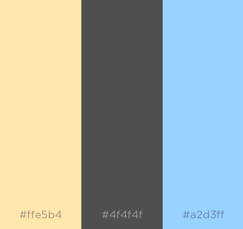

My True Weather
Index
Target Audience
Color Scheme
Typography
Color Scheme
 The main colors for this site are peach and dark gray, which go well together. Light blue is a secondary color that contrasts well with the dark gray.